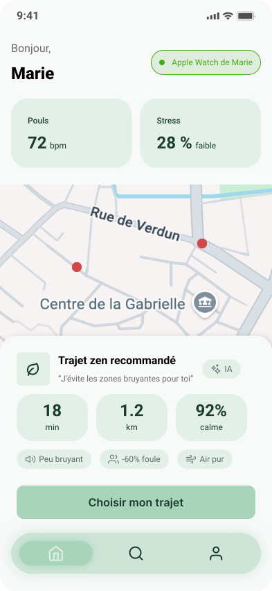
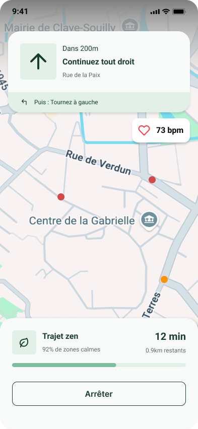

Le projet
Projet conçu dans le cadre d'un concours étudiant sur le thème "Vivre en 2050". BeatWay imagine une navigation qui s'adapte au rythme biologique, au stress et à l'environnement de l'utilisateur — pas seulement au trafic.
Objectif
Créer une expérience mobile fluide et rassurante qui propose des trajets adaptés au bien-être.
Cible
Citadins actifs sensibles au stress et à la qualité de leurs déplacements quotidiens.
Contraintes
Hiérarchiser les données biométriques et environnementales sans surcharger l'écran mobile.
En 2050, se déplacer autrement
Les GPS actuels optimisent uniquement le temps ou la distance. Ils ignorent le stress, la qualité de l'air et le rythme de vie de l'utilisateur.
BeatWay propose une navigation centrée sur l'humain : le trajet le plus rapide n'est pas toujours le meilleur.
Comment concevoir une navigation qui prend en compte le bien-être de l'utilisateur, au-delà du simple itinéraire ?
Les trajets imposés par les GPS classiques traversent des zones bruyantes et polluées qui augmentent le stress.
Intégrer le rythme cardiaque et le niveau de stress via l'Apple Watch sans complexifier l'interface.
Afficher carte, données bio et options de trajet sur un écran mobile sans surcharge cognitive.
Ma démarche
Du brief concours au prototype interactif, une approche UX structurée.
Recherche
Benchmark des apps de mobilité (Waze, Citymapper, Google Maps) et études sur le stress urbain
Idéation
Brainstorming, user stories et définition des parcours utilisateurs
Wireframes
Architecture de l'information et maquettes fil de fer
UI Design
Maquettes haute-fidélité et micro-interactions
Prototype
Prototype interactif testable sur Figma
Personae
Je pédale 45 minutes par jour dans Paris. Je veux éviter les grands axes pollués, même si ça me rajoute 5 minutes.
Mon cardiologue m'a dit de réduire mon stress. Si une app peut m'aider à trouver des trajets plus calmes, je prends.
Fonctionnalités clés
Chaque fonctionnalité répond à un besoin identifié lors de la phase de recherche.
Trajet zen
Itinéraire optimisé pour le calme, l'air pur et les espaces verts
Suivi biométrique
Pouls et stress en temps réel via Apple Watch
Qualité de l'air
Score environnemental en temps réel sur chaque trajet
Multi-trajets
Comparaison zen, rapide et vert en un coup d'œil
Résultats du projet
de la promotion au concours "Vivre en 2050"
écrans conçus (onboarding, carte, trajets, profil)
modes de trajet proposés : zen, rapide, vert
Aperçu des écrans
Quelques écrans clés du prototype BeatWay.




